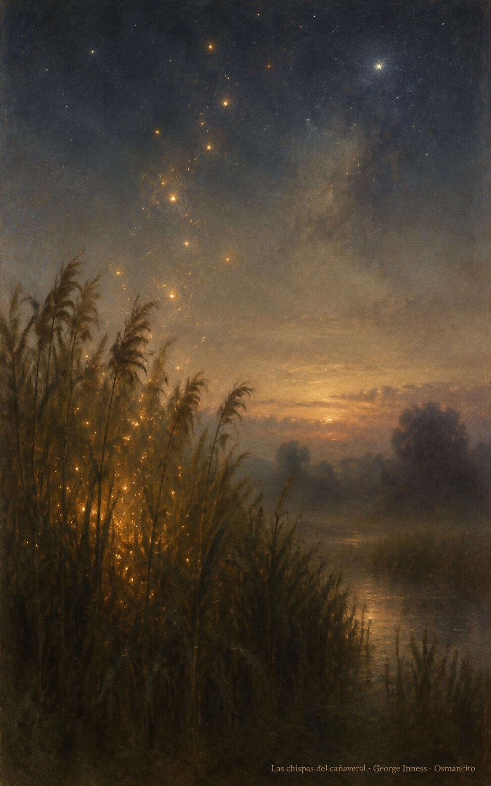
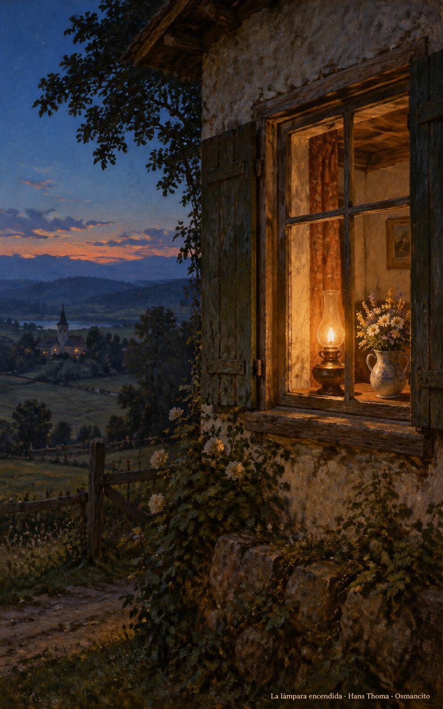

2 de noviembre de 2026
¡Buenos días!
En las manos de Dios
23
El Señor es mi pastor, nada me faltará.
Salmo 22,1. Fuente
Que descansemos en las manos de Dios, donde ningún tormento alcance y la prueba purifique como el crisol al oro. Que el pastor nos guíe por cañadas oscuras sin miedo, con su vara y su cayado. Que la esperanza no defraude: nada se pierde de lo que el Padre entrega. Que brillemos como chispas en el cañaveral, despiertos para el último día, cuando todo lo entregado se levante a la vida que no se acaba.
- El pastor guía el rebaño por la cañada oscura hacia las praderas de luz: Salmo 22, el Señor es mi pastor, nada me faltará.

- Las chispas doradas suben del cañaveral hacia las estrellas: Sabiduría 3, los justos probados como oro en el crisol brillan en el día del juicio.
¡Feliz lunes 2 de noviembre!
😊🙋♂
Conmemoración de Todos los Fieles Difuntos
Que la memoria de los que se fueron nos duela sin amargura: su salida no es destrucción, sino descanso en la paz de Dios. Que nuestro cariño los acompañe como una lámpara encendida en la ventana, y su ejemplo nos camine por dentro. Que pidamos por ellos como ellos pidieron por nosotros, seguros de que el amor permanece y nadie se pierde en las manos de Dios, ni en esta vida ni en la otra.

- La lámpara de aceite arde en la ventana junto a las flores: el cariño que acompaña a los que se fueron, encendido en la casa.
¡Feliz día de Todos los Fieles Difuntos!
© 2026 Osmancito